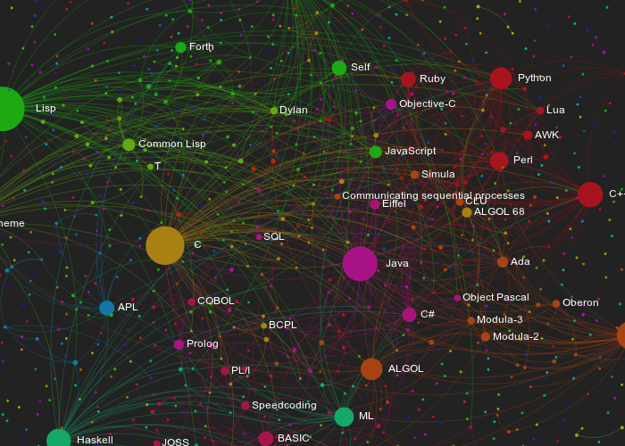
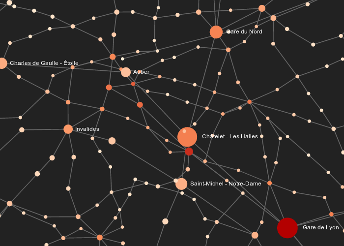
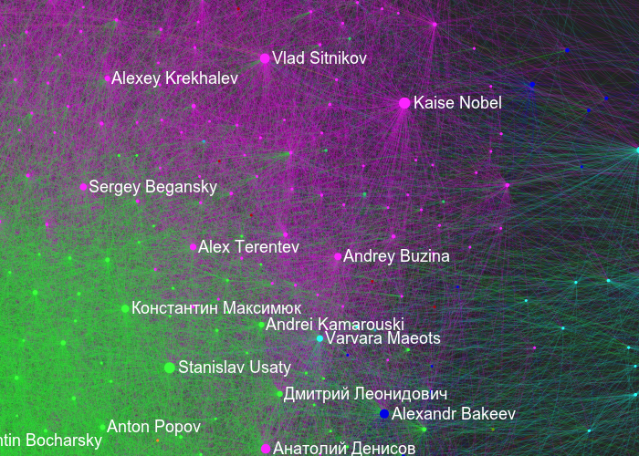
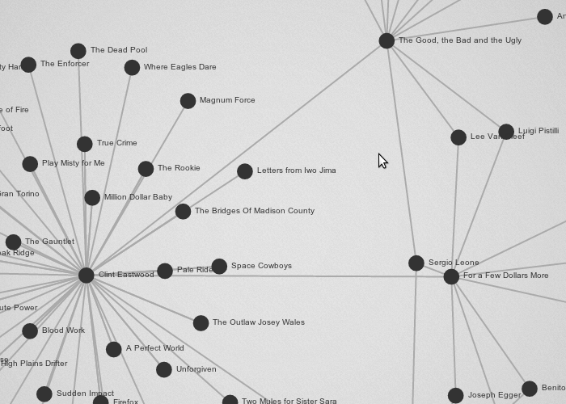
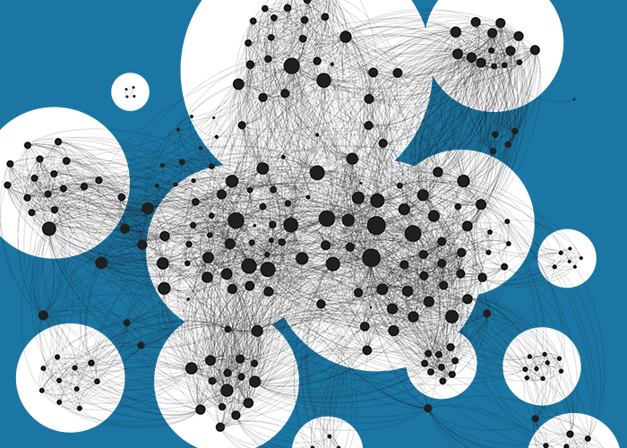
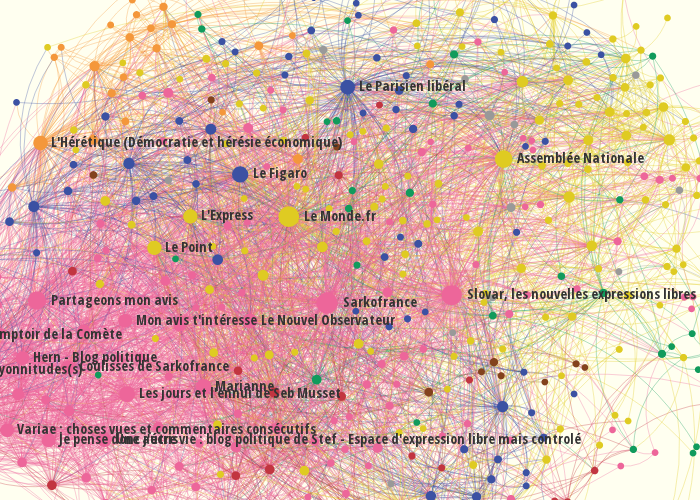
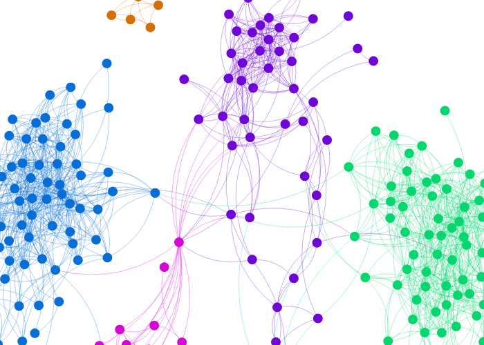

front-end engineer @linkfluence, Paris
#opensource #javascript #dataviz
[...] A well-designed visualization tool can allow the user to see structure in a graphed data set that is difficult or impossible to see in its raw form.
Also...
Gephi made it deadly simple and funny to visualize graphs.
People from different fields use it to display, analyze and play with different kind of data...
There is a real need for something more. People play with graphs, they might like more tools to share them.
In the era of Web apps, static representations might look old-fashioned.
If the browser freezes, the user leaves.
(just, it's not about millions of vertices, here...)
Mobiles, tablets offer new way to explore data.
To make it possible to adapt the graphics to your case.
Because it's always better when it's nice to the eye.
...and obviously
Graphs built from the characters cooccurences in movies scripts.
var graph = {
nodes: {
n1: { label: 'Node 1', x: 0, y: 0, size: 10 },
n2: { label: 'Node 2', x: 1, y: 1, size: 20 },
n3: { label: 'Node 3', x: -1, y: -1, size: 30 }
},
edges: {
e1: { source: 'n1', target: 'n2' },
e2: { source: 'n1', target: 'n3' }
}
};<!-- [...] -->
<script src="js/sigma.min.js"></script>
<div id="sigma-container" style="width: 100px; height: 100px;" />
<!-- [...] -->var k;
var s = sigma.init(
document.getElementById('sigma-container')
);
for (k in graph.nodes)
s.addNode(k, graph.nodes[k]);
for (k in graph.edges)
s.addEdge(
k,
graph.edges[k].source,
graph.edges[k].target,
graph.edges[k]
);
s.draw();
We generate it by creating N nodes grouped in C groups.
Then, we add E edges. Each edge has a P probability to link two nodes in the same clusters.
To make it graphically observable, nodes from the same group have the same color.
<!-- [...] -->
<script src="js/sigma.min.js"></script>
<script src="js/sigma.forceatlas2.js"></script>
<div id="sigma-container" style="width: 100px; height: 100px;" />
<!-- [...] -->var k;
var s = sigma.init(
document.getElementById('sigma-container')
);
for (k in graph.nodes)
s.addNode(k, graph.nodes[k]);
for (k in graph.edges)
s.addEdge(
k,
graph.edges[k].source,
graph.edges[k].target,
graph.edges[k]
);
s.startForceAtlas2();We keep the one from the last example, with the layout applied.
We add buttons to move the graph, zoom in and out, and return to the original position.
Buttons look like:
<!-- [...] -->
<div class="icon move-icon" tabindex="0" data-action="up" title="Move up">
<div class="icon-arrow-up"></div>
</div>
<!-- [...] -->We still have to bind those buttons. Here is one example:
$('[data-action="up"]').bind('click', function(e) {
// With "inst" our sigma instance:
var newPos = inst.position();
newPos.stageY += 80;
inst.goTo(newPos.stageX, newPos.stageY);
e.stopPropagation();
return false;
});Programming languages influence network
Paris Metro & RER network
Network visualization of a Russian internet marketing community
Graph databases exploration
Facenuke - French nuclear actors influence network
Websites hypertext network about 2012 French presidential elections
NameGenDev - Your ego-centered Facebook network visualized
(slides made with reveal.js)